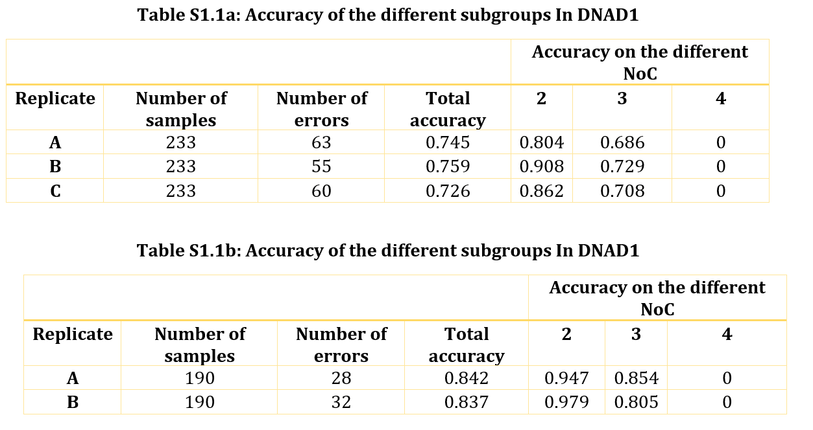

Study 1:Determining the NoC of the replicates
Summary
In the forensic DNA realm, DNA collected from a crime scene is used to ascertain whether a suspect was present at a crime scene or not. As DNA analysts generally recognize the fact that the preprocessing of DNA samples can create random artifacts (drop-ins, drop-outs, stutter), systematic techniques have been put in place to potentially mitigate the effects of these artifacts. One of these techniques is the use of replicates. Replicates are attained when a DNA sample is run multiple times under the same condition. In this paper, we studied replicates to decipher their possible effectiveness as a solution to the artifact problem. Using a machine learning approach, we compared the success that different replicate sub-groups attained in determining the Number of contributors (NoC) of DNA samples. To that effect, a Random Forest algorithm was used to study two sets of DNA databases, DNAD1 and DNAD2. DNAD1 (made up of 223 samples with masses less than 100 pg), had 3 replicates for each sample. A total of 3 sub-groups were created from this database (each containing 1 replicate from each sample). DNAD2 (made up of 190 samples with masses higher than or equal to 100 pg) had 2 replicates for each sample, thus leading to 2 sub-groups. In DNAD1, it was found that about 38 of the samples (17%) were misclassified by all 3 sub-groups. In DNAD2, 21 samples (11%) were misclassified by all replicates. Interestingly, more than 57% (34 out of the 59 misclassified samples) were blood samples. This, we believe, begs the question of whether different DNA samples (with regards to mass, source, NoC) will require a varying number of replicates to aid in effectively silencing unwanted artifacts in DNA samples.
Data Analysis
The database used, FST, has a total of 413 samples with 121 attributes. The database was divided into 2 groups - DNAD1 and DNAD2. DNAD1 contained samples with 3 replicates (Replicate A, Replicate B and Replicate C). These samples had masses less than or equal to 100 pg. DNAD2 on the other hand contained samples with only 2 replicates (Replicate A and Replicate B). These samples had masses greater than 100 pg. DNAD1 had a total of 223 samples while DNAD2 had 190 samples. DNAD1 was further divided into 3 subgroups (A, B, and C). These subgroups had a replicate from each of the 223 samples. The same was done in DNAD2, but in this case, 2 subgroups were created (A and B). The division of the samples is shown in Figure S1.1.
The experimenter module within the Weka interface was used to determine the NoC of the samples in each group. Using the random forest algorithm, a 1-Fold cross-validation analysis was done for each sample. In each case, the test data was made up of only the target sample, while the training data was everything else. The result from this analysis is shown in Tables S1.1a and S1.1b. These tables show the accuracies obtained from the different groups. In Table S1.1a, it can be observed that group A has a total of 63 errors, group B had a total of 55 errors while group C had 60 errors. In Table S1.1b on the other hand, group A had 28 errors while group B had 32 errors. The fact that these groups had different number of errors points to the fact that they are fundamentally different. Thus, denoting the potential occurrence of differences between replicates of the samples. Details about misclassified instances are provided in Tables S1.2a and S1.2. In S1.2a, it can be observed most samples that were misclassified were misclassified by the ABC group. AC had more misclassified samples in common than either AB or BC. Based on this observation, it can be concluded that certain replicates are more similar than others.
